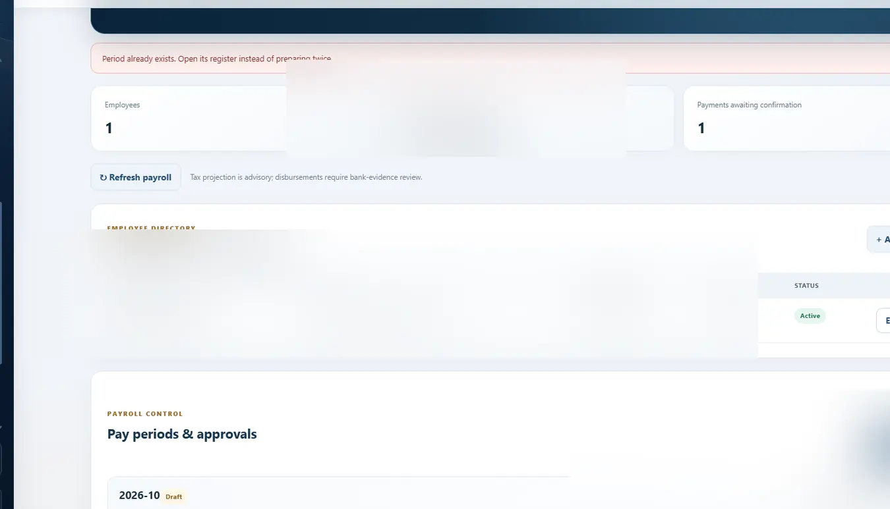
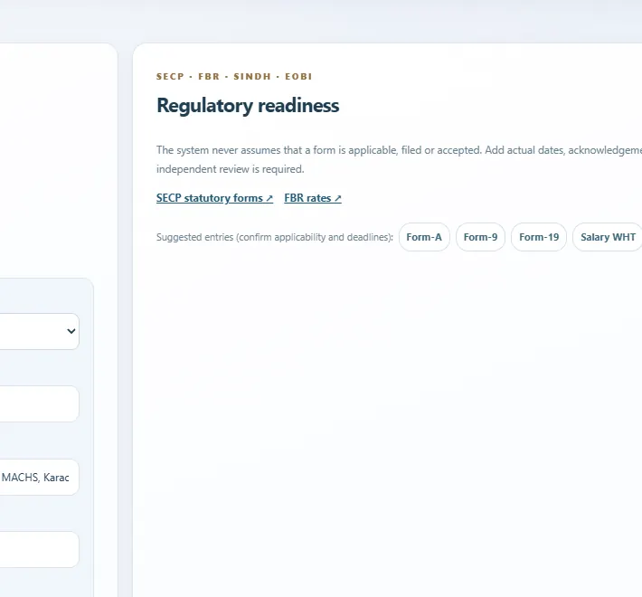

01
Salary changes are hard to reconcilePayroll component control
Keep employee structures, salary components and period inputs organized with role-appropriate review.
↗ Payroll accuracy
A configurable operating environment for employee records, payroll preparation, management controls and routine company administration.
 SANITIZED UI PREVIEW
SANITIZED UI PREVIEWEmployee records, salary components, attendance inputs, changes and statutory obligations often spread across multiple spreadsheets and manual registers. That's expensive to maintain—and makes reconciliation harder.
People & Compliance organizes repeatable administration into clearer records, period controls and defined responsibilities, with the option to tailor supporting company-compliance workflows.
Payroll and company-governance administration need repeatable controls rather than a collection of disconnected trackers.
Keep employee structures, salary components and period inputs organized with role-appropriate review.
Distinguish editable setup and payroll preparation from reviewed or locked outputs.
Create a clearer register of corporate administration, deadlines and evidence of action.
Consolidate authorized payroll summaries, exceptions and outstanding administration in one workspace.
The actual payroll, filing and statutory-compliance rules depend on the company and jurisdiction. This is configurable administrative software, not a substitute for legal, payroll or tax review.
See genuine future product ideas ↗Modules are described from the user's perspective. Exact controls, automations, configurations and integrations are defined during a private implementation discussion.
Maintain structured company, organization and employee reference information.
Keep authorized personnel information accessible to relevant administrators.
Organize salary structures, allowances and deductions under defined controls.
Support preparation, review, adjustments and period-level records.
Differentiate editable configuration from finalized period outputs.
Generate appropriately scoped administrative outputs for payroll communication.
Scope attendance or field-presence inputs where the organization needs them.
Bring reviewed employee-related deductions and advances into the same administrative context.
Track routine corporate and administrative obligations and their evidence.
Surface payroll summaries, exceptions and action items to authorized management.
Selected authentic interface screenshots reveal the design language and user experience. Sensitive records and proprietary implementation details remain outside the public showcase.
Make owner-facing administrative information easier to read.
SELECTED PRODUCT CAPTURESupport a clearer, more structured approach to payroll preparation.

SELECTED PRODUCT CAPTUREBring employee and organization data into a controlled reference layer.

SELECTED PRODUCT CAPTURETailored to local payroll practices, company structures and administrative needs.
Reduce re-entry and fragmented monthly payroll preparation.
Keep meaningful approvals and payroll decisions with authorized personnel.
Scope compensation, periods and compliance reporting to the intended jurisdiction.
Extend administrative modules as a team grows and its obligations change.
Our approach begins with how your team actually works. We identify the repetitive administrative steps, define the controls that matter, and discuss an implementation that fits—not a longer software checklist.
Shown as an on-demand customizable capability, not an independently certified statutory payroll or filing service. All public People & Compliance screenshots have been sanitized. Local tax, employment and company-law determinations require professional review.
Explore a guided product walkthrough or request on-demand configuration. We discuss deeper workflows and implementation details privately.